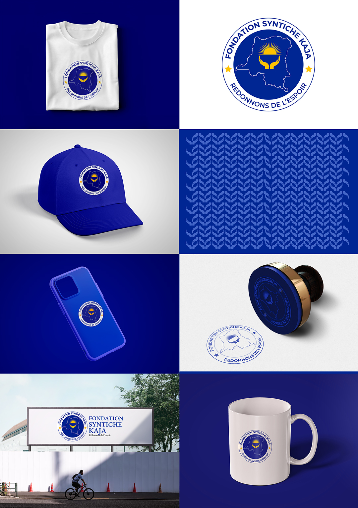
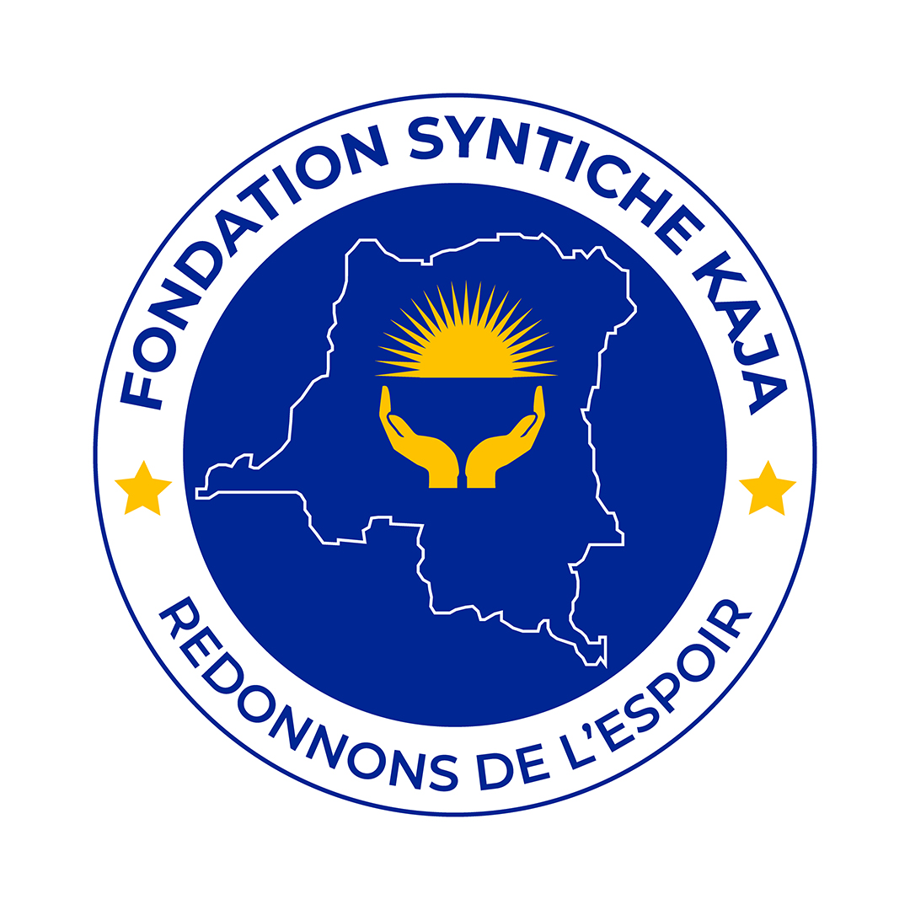
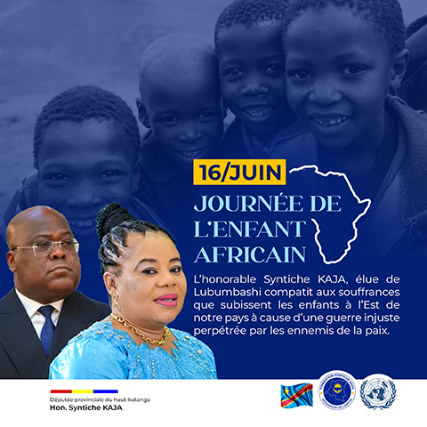
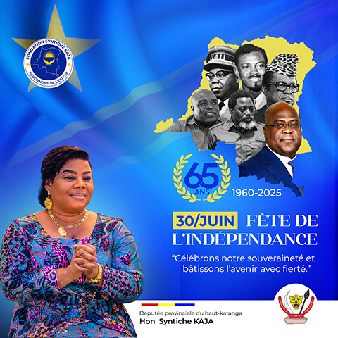
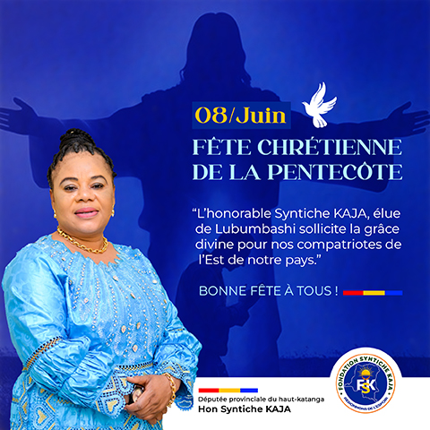

La Fondation Syntiche Kaja est une organisation engagée dans des actions sociales et humanitaires. L'objectif du projet consistait à concevoir une identité visuelle forte, moderne et porteuse de sens afin de renforcer la visibilité et la crédibilité de la fondation.
Le logo a été conçu autour de symboles représentant l'entraide, l'amour, la solidarité et l'espoir. Les éléments graphiques ont été pensés pour transmettre les valeurs humaines portées par la fondation.
L'identité visuelle repose principalement sur le bleu marine et le blanc afin de transmettre confiance, professionnalisme, sérénité et crédibilité.
La famille Montserrat a été retenue pour sa modernité, sa lisibilité et sa capacité à renforcer l'image institutionnelle de la fondation.




Le projet a permis de doter la Fondation Syntiche Kaja d'une identité visuelle cohérente, professionnelle et durable capable d'accompagner son développement et ses actions auprès des communautés.
Cette réalisation illustre l'importance d'une identité visuelle forte pour les organisations à vocation sociale. Grâce à une charte graphique structurée, la fondation bénéficie désormais d'une image plus crédible et plus impactante.
Afro Vecteur vous accompagne dans la création d'identités visuelles, de packagings et de supports de communication professionnels.
Demander un devis